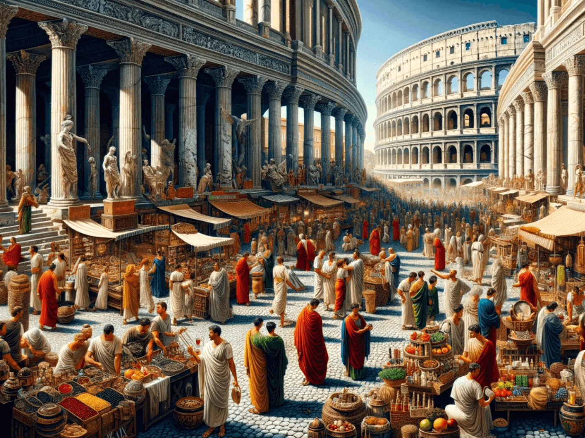
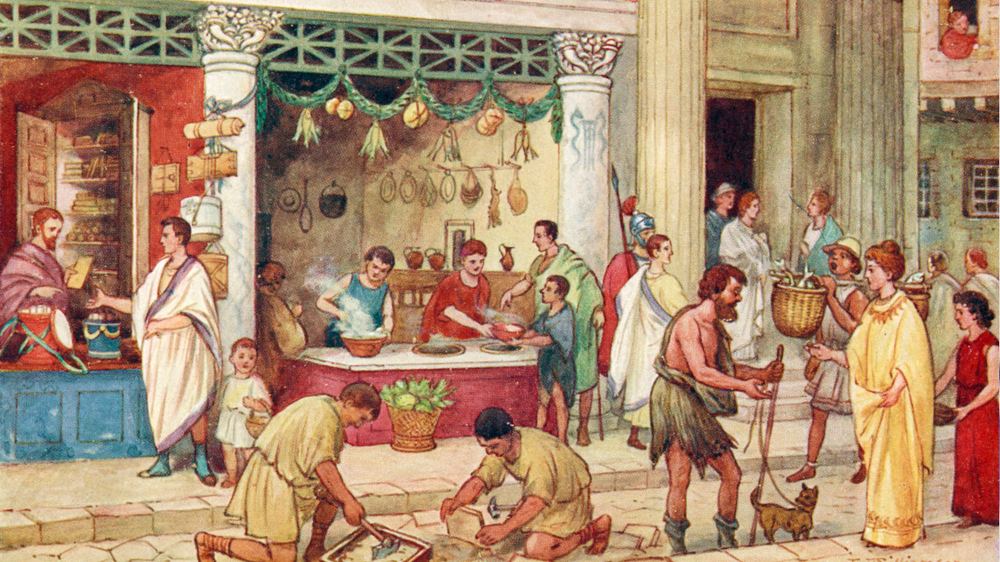
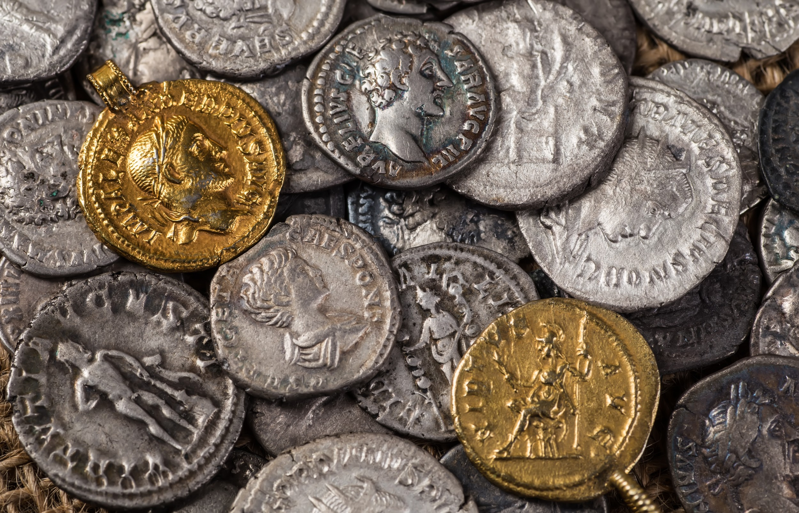
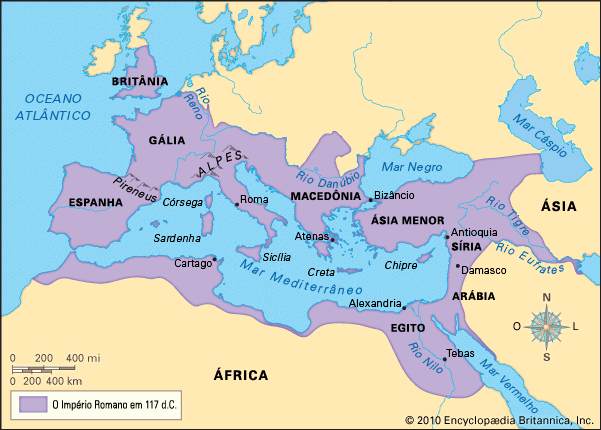

O QUE FOI?
O comércio foi uma atividade fundamental para o desenvolvimento e a integração do mundo romano. Com a expansão territorial e o crescimento das cidades, tornou-se uma grande rede de trocas de alimentos, matérias-primas, produtos artesanais e artigos de luxo entre diferentes regiões do Império. Também envolvia a circulação de pessoas, dinheiro e conhecimentos, contribuindo para abastecer as cidades, sustentar o exército e fortalecer a economia romana.
O COMÉRCIO DE ESCRAVOS
O comércio de escravos fazia parte da estrutura econômica romana e estava ligado à expansão territorial de Roma. O crescimento das conquistas aumentou a quantidade de pessoas escravizadas, que eram utilizadas em atividades agrícolas, domésticas, artesanais, mineradoras e outras funções. Assim, a escravidão tinha grande importância para o funcionamento da economia romana.
ESTRUTURA DO COMÉRCIO ROMANO

IMPORTAÇÃO E EXPORTAÇÃO
SAIBA MAIS
A importação e a exportação eram importantes para a economia romana, principalmente com a expansão territorial e o crescimento das cidades. Roma recebia produtos de diversas regiões do Mediterrâneo e de outras partes do Império. Entre os principais produtos estavam trigo, azeite, vinho, cereais, metais, tecidos, cerâmicas, madeira e pedras. O trigo tinha grande importância para abastecer a população urbana de Roma.
As províncias também exportavam alimentos, matérias-primas e produtos manufaturados para outras regiões. Assim, diferentes territórios do Império dependiam da circulação de produtos entre si. As rotas comerciais e o uso de moedas facilitavam essas trocas. O comércio ajudava a abastecer as cidades e contribuía para o funcionamento do Estado e do exército romano.

MERCADOS E FEIRAS
SAIBA MAIS
Mercados e Feiras Os mercados e feiras eram importantes espaços de comércio nas cidades romanas, onde acontecia a compra, venda e circulação de diferentes produtos. Com o crescimento das cidades, principalmente de Roma, aumentou a necessidade de alimentos, ferramentas, roupas, materiais de construção e objetos utilizados no cotidiano.
As ruas também funcionavam como espaços de trabalho e comércio, reunindo diferentes profissionais, como artesãos, ferreiros e outros trabalhadores. Dessa forma, os mercados e as atividades comerciais estavam diretamente ligados à vida urbana e contribuíam para o crescimento econômico das cidades romanas.

MOEDA E SISTEMA ECONÔMICO
SAIBA MAIS
As moedas tinham um papel importante no comércio romano, pois facilitavam as transações e ajudavam na integração econômica entre regiões com diferentes culturas e economias. Elas tornavam mais fácil a circulação de produtos e o comércio entre as diversas partes do Império.
Apesar da importância do comércio, a economia romana ainda dependia fortemente da agricultura, da produção local e do trabalho escravizado. A escravidão tinha grande importância econômica, sendo utilizada na agricultura, nas atividades domésticas, artesanais e mineradoras.
O Estado também participava da organização econômica, cobrando impostos e taxas e controlando regiões produtoras e rotas estratégicas. As riquezas obtidas nas províncias ajudavam a sustentar o Estado, o exército e as grandes cidades.

ESPECIALIZAÇÃO REGIONAL
SAIBA MAIS
A especialização regional acontecia porque cada região do Império Romano possuía diferentes recursos e condições de produção. O Egito, o Norte da África e a Sicília destacavam-se na produção de trigo, enquanto a Itália e a Gália Narbonense tinham importante produção de vinho. A Hispânia e algumas regiões da Itália também se destacavam na produção de azeite.
Essa divisão permitia que cada região fornecesse seus produtos para outras partes do Império. Dessa forma, alimentos e matérias-primas circulavam por grandes distâncias, fortalecendo o comércio e a integração econômica entre as províncias romanas.